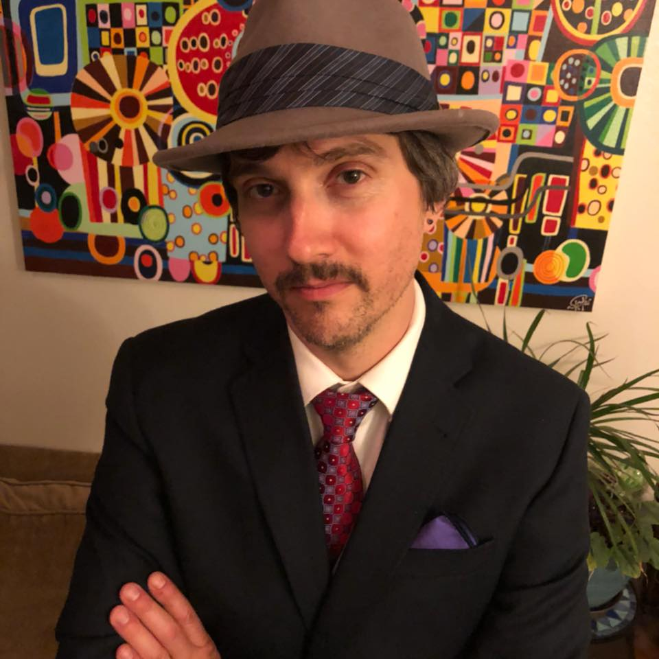

About Me
Greetings! My name is Jeremy Joseph Lee. I'm passionate about education, music, coding, and facilitating fun and knowledge--preferably at the same time. I have a BA in anthropology and East Asian studies from the University at Albany, SUNY, and an MA in applied linguistics from the University of Montana. I currently teach English as a Second Language (ESL) to adult learners at the University of Arizona here in Tucson. I've also done teacher training here and in Guangzhou, China, and in Hermosillo, Mexico.
While facilitating learning is an essential component of my educational methodology, I also love extending that belief to my hobby of serving as a radio DJ. The Waiting Room is a two-hour weekly show on 99.1FM// Downtown Radio hosted by me as my alter ego: DoctorSlow. In this role I curate a live musical "mixtape" of sorts comprised of new, old, local, and international "left-of-the-dial" rock'n'roll. My show airs every Thursday from 7-9am and can be heard over the airwaves in Tucson or streamed worldwide from the website or our mobile app: Downtown Radio Tucson.
As a fullstack web developer, I hope to bridge these worlds and bring my patience and knowledge as an educator to web projects and bridge the gap between front-end users or clients and the all to often esoteric nature of web design and development. Ideally, I will be able to work with musicians, record labels, or even radio stations and truly see my passions connected and blossom.